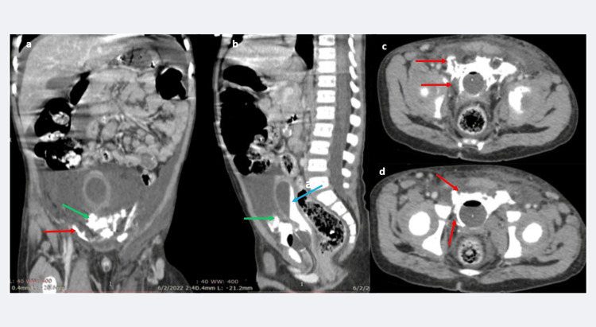

Ficha del catálogo
Rotura vesical traumática
- Sistema
- Urinario
- Modalidad
- TC
- Región
- Vejiga y pelvis
- Dificultad
- Avanzado
Es la solución de continuidad de la pared vesical secundaria a un traumatismo cerrado o penetrante, con frecuencia asociada a fracturas del anillo pélvico. Se presenta con hematuria macroscópica y dolor suprapúbico. Distinguir la rotura intraperitoneal de la extraperitoneal es esencial porque la primera requiere cirugía y la segunda suele tratarse con sonda vesical.
Técnica
La prueba de elección es la cistotomografía, que consiste en llenar la vejiga de forma retrógrada con contraste diluido a través de la sonda hasta lograr una distensión adecuada y adquirir después las imágenes. La fase excretora de una tomografía abdominal no basta, porque la vejiga puede quedar insuficientemente distendida y ocultar el defecto. Se recomienda una adquisición tras el vaciado si persisten dudas.
Qué observar
- Salida de contraste fuera de la vejiga y su distribución en la pelvis
- Contraste que rodea asas intestinales y alcanza los recesos peritoneales
- Contraste confinado al espacio prevesical y a los planos extraperitoneales
- Defecto de la pared vesical y coágulos intravesicales
- Fracturas del anillo pélvico y hematoma pélvico asociado
- Distensión conseguida durante el llenado retrógrado
Hallazgos
En la rotura intraperitoneal el contraste se dispersa libremente, dibuja las asas intestinales y se acumula en los recesos peritoneales, y suele afectar a la cúpula vesical. En la extraperitoneal el contraste queda confinado al espacio perivesical y se extiende por los planos de la pelvis anterior con un aspecto de llama, sin rodear asas. Ambos tipos pueden coexistir y se acompañan de hematoma pélvico y de fracturas.
Perlas
Una vejiga poco llena puede dar un estudio falsamente normal, por lo que la distensión adecuada durante el llenado retrógrado es el requisito técnico principal. Ante hematuria macroscópica y fractura pélvica conviene realizar la cistotomografía aunque la tomografía inicial no muestre extravasación.
Diagnóstico diferencial
- Lesión ureteral
- La fuga aparece en la fase excretora en el trayecto del uréter, con vejiga íntegra en el llenado retrógrado.
- Lesión de uretra posterior
- El contraste se extravasa por debajo de la vejiga y se estudia con uretrografía retrógrada antes de sondar.
- Contusión vesical sin rotura
- Hay engrosamiento parietal y coágulos intravesicales pero no se demuestra salida de contraste.
- Hematoma pélvico que comprime la vejiga
- Deforma y desplaza la vejiga en forma de lágrima pero la pared se mantiene continua.
Simuladores
- Contraste excretado por el riñón que se acumula en un hematoma pélvico
- Sonda mal posicionada que introduce contraste fuera de la luz vesical
- Restos de contraste de un estudio previo en la cavidad peritoneal
Por modalidad
- TC
- Es la técnica de elección en forma de cistotomografía retrógrada, define el tipo de rotura y las lesiones asociadas.
- US
- Puede mostrar líquido libre y coágulos, pero no permite clasificar la rotura ni descartarla.
Protocolo
Cistotomografía con instilación retrógrada de contraste yodado diluido por la sonda vesical hasta alcanzar una distensión adecuada, con adquisición pélvica en el llenado máximo y, si se precisa, otra tras el vaciado. Se emplean reconstrucciones sagitales y coronales para seguir el recorrido del contraste extravasado. Si se sospecha lesión uretral se realiza primero una uretrografía retrógrada.
Clasificación
Se separan la rotura extraperitoneal, la más frecuente y ligada a fracturas del anillo pélvico, la rotura intraperitoneal, que afecta a la cúpula y exige reparación quirúrgica, y las formas combinadas. También se describen la contusión sin fuga y la lesión del cuello vesical, que tiene implicaciones funcionales propias.
Errores frecuentes
- Confiar en la fase excretora con vejiga poco distendida y dar por descartada la rotura
- No diferenciar el patrón intraperitoneal del extraperitoneal, lo que cambia el tratamiento
- Sondar antes de descartar lesión uretral en un traumatismo pélvico grave

rotura vesical cistotomografía traumatismo pélvico hematuria extravasación vejiga urgencia